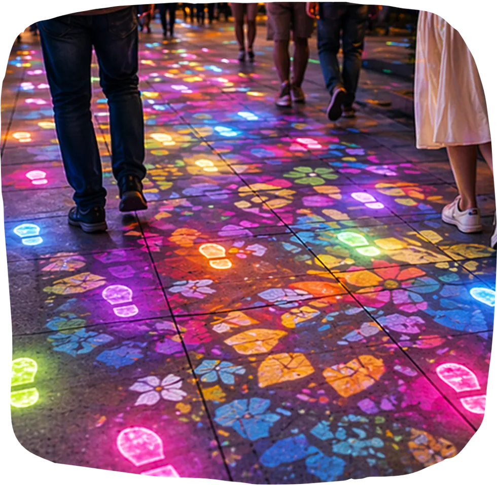
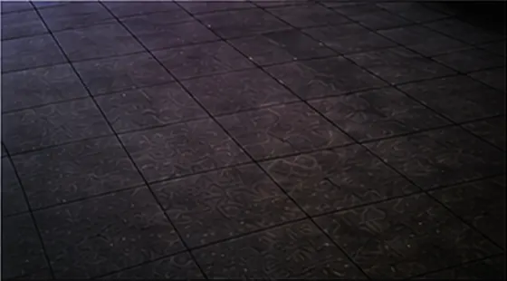
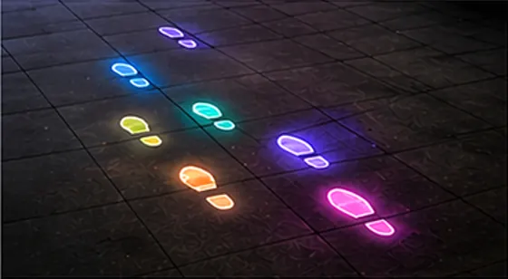
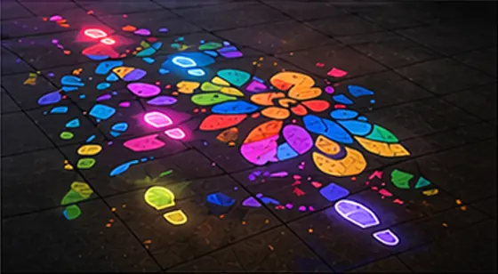
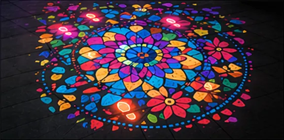
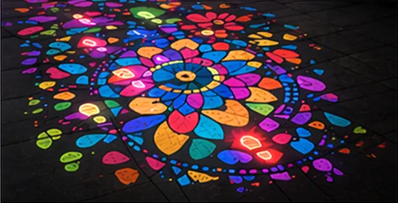

DATE
2026年10月3日（土）
10時〜12時
PLACE
宇治市産業会館
多目的ホール
WHO
小学4年生〜中学生
保護者の同伴は任意
FEE
無料
（予定）
TIME
120分
* 学年が対象外のかたもご相談ください。学年や人数に応じて参加いただけるか検討します。
DATE
2026年10月3日（土）
10時〜12時
PLACE
宇治市産業会館
多目的ホール
WHO
小学4年生〜中学生
保護者の同伴は任意
FEE
無料
（予定）
TIME
120分
* 学年が対象外のかたもご相談ください。学年や人数に応じて参加いただけるか検討します。
主催宇治NEXT（宇治市・宇治商工会議所）
運営協力株式会社taliki
企画・開発野寺悠太（灘高校）
「通り過ぎるまち」を、
「関わりたくなるまち」へ。
私たちは毎日、まちの中を歩いています。けれど、道や広場を「目的地へ向かうための場所」として、ただ通り過ぎてしまうことも少なくありません。
Playable City は、そんなまちを「遊び」という視点から捉え直し、人が立ち止まったり、誰かと関わったりするきっかけをつくる考え方です。
このワークショップでは、そんな Playable City の考え方に触れながら、「宇治のまちに、こんな遊びがあったら面白そう」を一緒に考えます。
いつものまちを、ただ通り過ぎる場所から、少し関わってみたくなる場所へ。そんな新しいまちの見方を、一緒につくってみませんか？
120分のワークショップは、
知る → 体験する → つくる → 共有する
という順番で進みます。
発表して、みんなと共有
アンケート・まとめ
そして、まちを考える。
Playable City は、イギリス・ブリストルで始まった、遊びやテクノロジーを通して、人とまちとの新しい関わり方をつくる取り組みです。人の好奇心や想像力を生かし、まちに小さな仕掛けを加えることで、立ち止まる・気づく・楽しむといった新しいまちの体験を生み出します。
ただの道
少し遊びたくなる道
通り道が、寄り道したくなる場所に変わる。
待つだけの場所
誰かと遊べる場所
バス停や信号待ちの数分が、待ち時間ではなくなる。
ただの階段
挑戦が生まれる場所
上るだけだった段差が、遊びの装置になる。
すれ違うだけの場所
気配を感じる場所
さっき歩いた人の足あとが、次の人の体験を変える。
今回のワークショップでは、Playable City の例から宇治のまちを考えます。

床に投影された光の足あとを、歩いてつくる装置です。ひとりでは点にしかなりませんが、通り過ぎた人の足あとが積み重なると、一枚の絵になります。
※ 完成イメージです。当日は体験版を体験していただきます。

01
何も見えない、暗い床から始まります。

02
踏んだところに、光の足あとが残ります。

03
足あとが重なると、模様が見え始めます。

04
歩いた人が増えるほど、模様が広がります。

05
みんなの一歩で、一枚の絵ができあがります。
当日は、同様の体験の体験版を体験していただける予定です。
文章より絵が中心。実現できるかどうかは、いったん置いておいて大丈夫です。

場所、相手、仕組み、名前。
4つが決まると、頭の中の「面白そう」が、人に話せる１つのアイデアになります。
企画・開発
宇治市未来キャンパス受講生。いつもの道をもっと面白くしたいと思い、歩くと光の足あとが現れる装置「Color Shift Walk」をつくっています。このワークショップでは、企画・当日の運営・装置の開発を担当します。
筆記用具をお持ちください。アイデアシート（A3の紙）はこちらで用意します。動きやすい靴で来ていただけると、体験パートが楽しめます。
必須ではありません。お子さんだけでも参加できます。保護者のかたがご一緒の場合は、お子さんと一緒にアイデアを考えていただいても、後ろで見ていていただいても構いません。
主な対象は小学4年生〜中学生ですが、それ以外のかたもご相談ください。学年や人数に応じて、参加いただけるか検討します。
大丈夫です。大切なのは、きれいに描くことではなく「こんな遊びがあったら楽しそう！」というアイデアを形にすること。簡単な図や言葉だけでもOKです。
屋内で実施するため、雨天でも予定どおり開催します。中止する場合は、申込時の連絡先へご連絡します。
記録と広報のために撮影する予定です。写りたくない場合は当日スタッフにお伝えください。その旨に配慮して撮影します。
ほかに気になることがあれば、下の連絡先までお気軽にどうぞ。